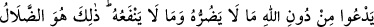
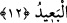
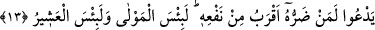

görecektir.”
“İşte bu,” her iki cihanı kaybetmek “apaçık ziyanın ta kendisidir.” Apaçık olan ziyan,
bütün âlimlerce bilinir. Ondan daha büyük bir ziyan yoktur.
Ne mal, ne amel, ne dünya ve ne de din kalır
Ne sıdk parıltısı ne de nûr-i yakîn kalır
Her iki cihanda da muztarip, hor, zelil ve mahzun olur
Elbette bundan daha beter bir ziyan mevcut değildir
Bâzıları şöyle demiştir: “Dünyada hüsran, tâatları terk etmek ve muhâlif davranışlara
sarılmaktır. Âhirette hüsran ise hasımların ve alacaklıların çok olmasıdır.”
12. O, Allah’ı bırakıp, kendisine ne faydası, ne de zararı dokunacak olan şeylere
yalvarır. Bu, (haktan) büsbütün uzak olan sapıklığın ta kendisidir.
“O, Allah’ı” O’na ibâdeti “bırakıp, kendisine ne” ibâdet ettiğinde “faydası, ne de”
ibâdet etmediğinde “zararı dokunacak olan şeylere yalvarır.” ibâdet eder. Yâni onlar
zarar ve fayda vermek şânından olmayan cansız varlıklara taparlar. Bu ifâde, hüsranın
ne kadar büyük olduğunu açıklayan bir başlangıç cümlesidir.
“Bu” yalvarma, haktan ve hidâyetten “büsbütün uzak olan sapıklığın ta kendisidir.”
“Uzak sapıklık” çölde yolunu kaybedip iyice kaybolan kimsenin kaybolmasından istiâre
olarak kullanılmıştır. Onun sapma mesafesi uzun ve uzak olmuştur. Çünkü yakınlık ve
uzaklık, hissi mesafede ârız olan hallerdendir.
13. O, zararı faydasından daha yakın olan bir varlığa yalvarır. O (yalvardığı), ne
kötü bir yardımcı, ne kötü bir dosttur!
“O, zararı faydasından daha yakın olan bir varlığa yalvarır. O (yalvardığı), ne kötü
bir yardımcı, ne kötü bir dosttur!” Yâni o kâfir kıyâmet günü mâbûdu yüzünden zarara
uğradığını, cehennem ateşine girdiğini görüp zararı faydasından daha yakın olan bir
varlıktan yardım konusunda hiçbir emâre göremeyince yalvarıp çığlık atarak şöyle der:
“Vallahi o ne kötü bir yardımcı, ne fena bir arkadaş, dost ve yaren imiş!” Sırf zarar ve
faydadan tamamen uzak olanın durumu nasıl olur bir düşün.
Âyet bahsedilen kimsenin zikredilen duâsının sonucunu beyan etmek ve onun derin bir